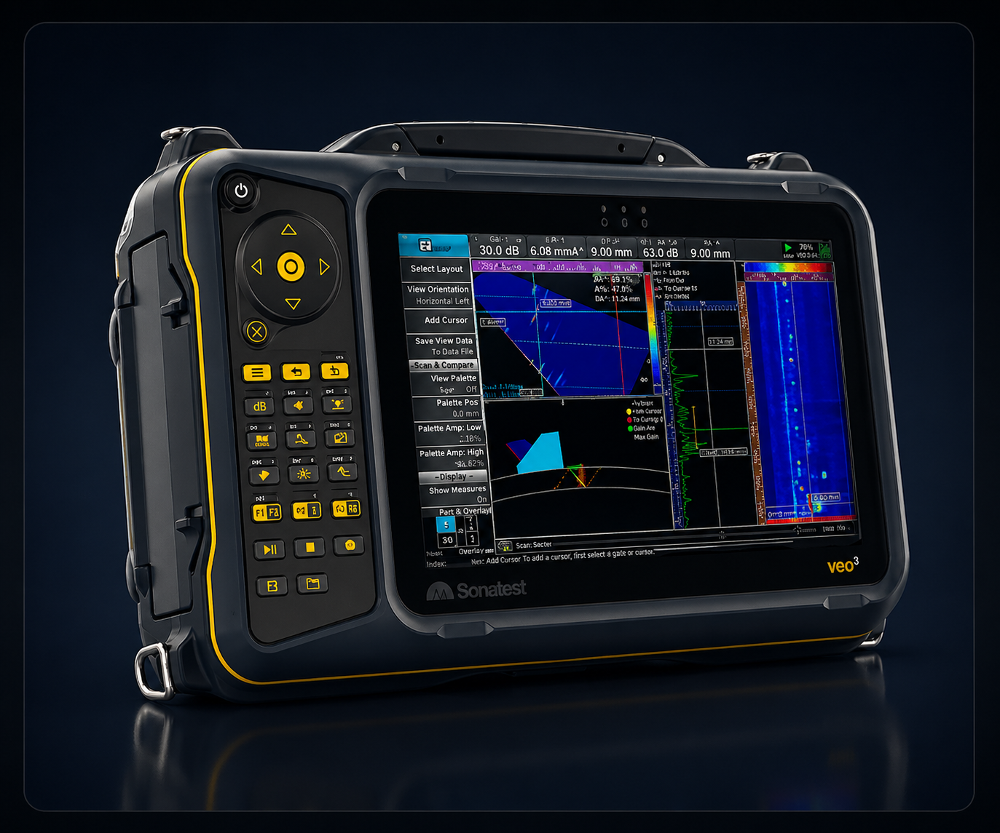
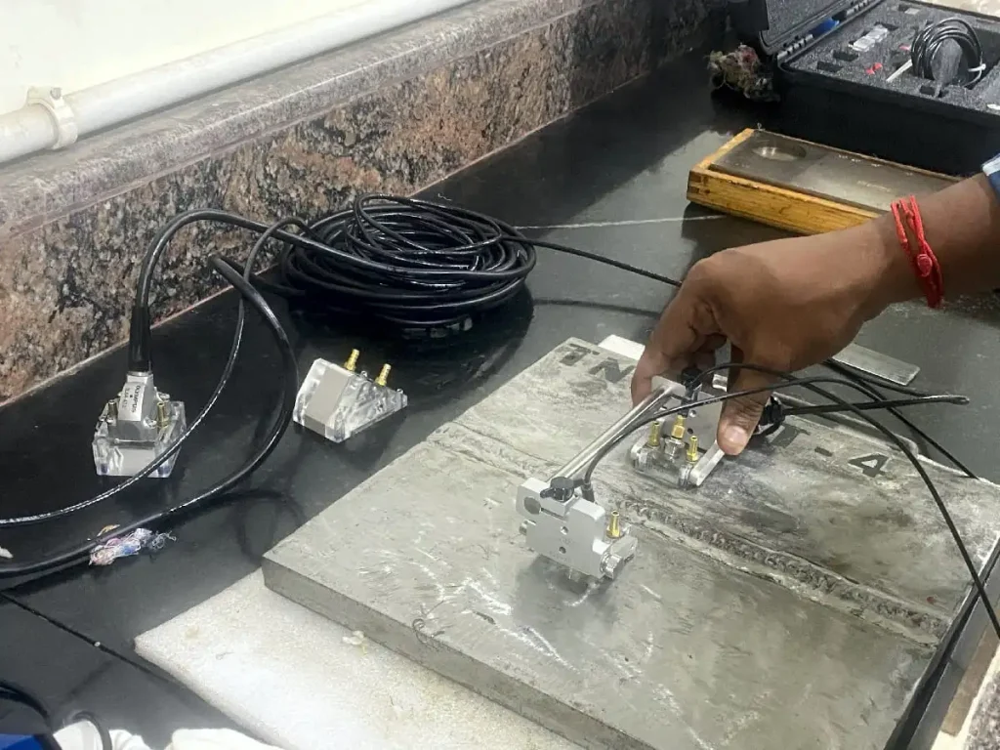
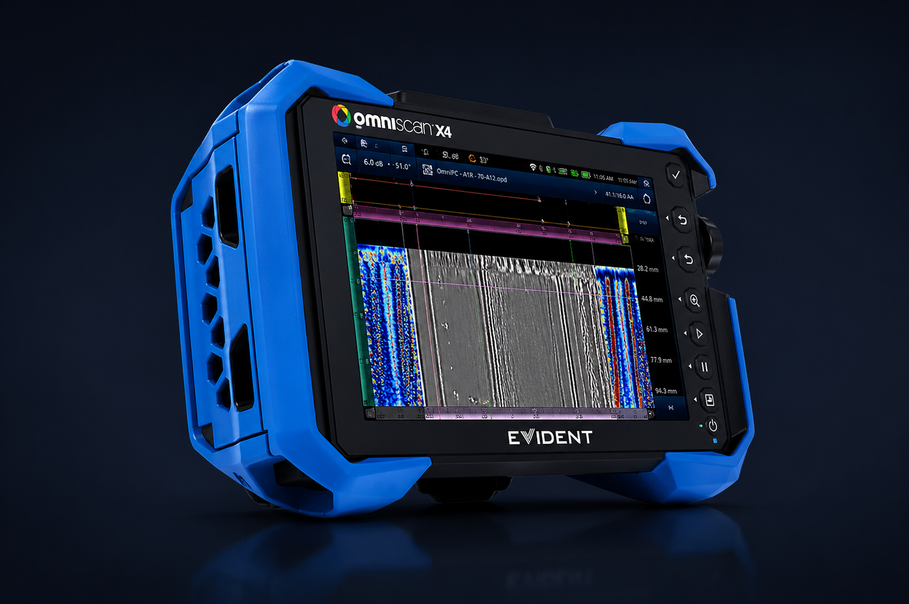

NDT INSPECTION SERVICES
Comprehensive non-destructive testing across advanced ultrasonic and conventional methods — accurate, reliable results without compromising asset integrity.

PAUT uses multi-element transducers that electronically steer and focus the ultrasonic beam without moving the probe — delivering superior flaw detection, accurate sizing, and full volumetric coverage. Ideal for welds, pressure vessels, pipelines, and complex geometries. Colour-coded S-scans and B-scans provide immediate visual data on subsurface conditions.

TOFD captures diffracted signals from defect tips rather than reflected echoes — making it the most accurate technique for sizing planar weld flaws. Provides high-resolution D-scan imaging with excellent depth sizing capability. Extensively used on pressure vessels, structural welds, and piping under ASME, AWS, and EN codes.

Systematic automated scanning to produce detailed 2D and 3D C-scan thickness maps identifying patterns of metal loss, corrosion zones, and erosion. Critical for storage tanks, pipelines, pressure vessels, and marine structures — enabling fitness-for-service assessments and remaining life calculations before failures occur.

Detection of surface and near-surface discontinuities in ferromagnetic materials using magnetic fields and fine iron particles. Fast, reliable, and cost-effective for revealing cracks, seams, and laps across welds and base materials.

Liquid penetrant inspection reveals surface-breaking defects on any non-porous material — metals, ceramics, plastics. Fast, portable, and highly sensitive. Widely used across manufacturing and maintenance inspections.

High-resolution optical probes allow remote visual inspection of confined, inaccessible areas — engine cavities, turbine blades, heat exchangers, pipelines, and pressure vessels — without disassembly or shutdown.

TFM is the most advanced ultrasonic imaging technique, reconstructing the full waveform data captured by Full Matrix Capture (FMC) to synthetically focus at every pixel in the region of interest — producing the highest-resolution images possible in UT, making it ideal for detecting complex near-surface defects, weld root flaws, and difficult geometries that conventional PAUT may miss.

Manual Ultrasonic Testing (UT) is a versatile, portable, and widely accepted NDT method in which a technician manually positions and manoeuvres a single-element probe over the test surface to detect internal flaws, measure material thickness, and characterise discontinuities in welds, forgings, castings, and base materials across a broad range of industrial applications.

Ultrasonic thickness measurement uses high-frequency sound waves to precisely determine the remaining wall thickness of materials from a single accessible surface — making it the primary method for monitoring corrosion, erosion, and metal loss in pipelines, pressure vessels, tanks, and structural components without requiring access to the inner surface.